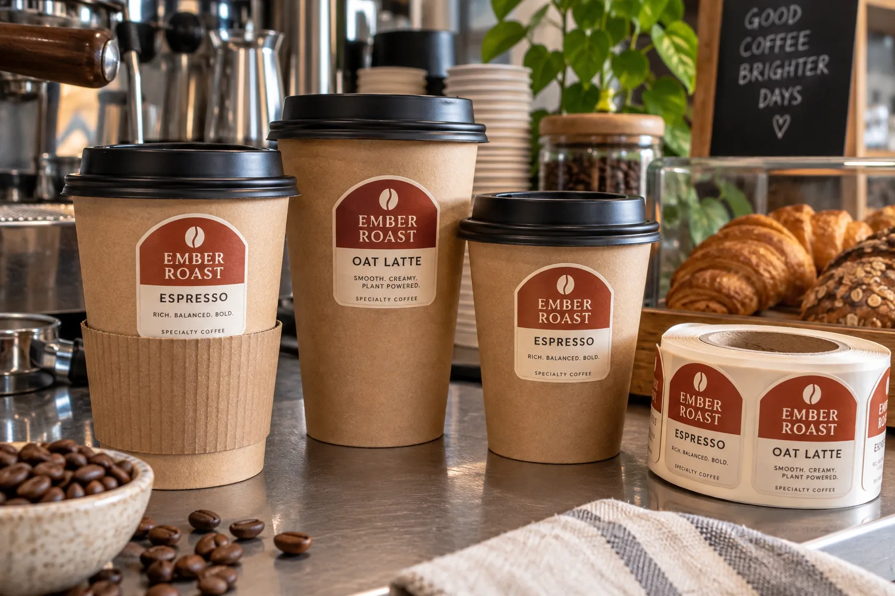

The sleeve can erase your brand
A cafe sends me a nice circular logo and a cup supplier's drawing. I would put a real sleeve on the filled cup before judging the design. If half the logo disappears under corrugated kraft, the label is in the wrong place even if it sticks perfectly. Conversely, lifting it too high can interfere with the lid or the customer's drinking area.
Avery Dennison's quick-service label overview lists hot and cold beverage cups among possible labeling applications. That is a category example, not evidence that a particular stock will suit a specific cup coating or hot-fill routine.
One shop, three cup sizes
Imagine a composite roaster offering espresso, flat white and oat latte in different cup sizes. The team wants a single brand sticker and a small variable drink mark. I would test the smallest cup first: its visible band above the sleeve may be narrow, and a large circle on a tapered wall can wrinkle at the edges. The larger cup cannot rescue a label that fails on the smallest one.
A composite takeaway chain applies labels during a rush. Staff may not press each sticker for several seconds. I would assess placement at the actual service pace and cup temperature. A beautiful label stock that needs careful hand smoothing is a poor choice if the workflow cannot give it that attention.
Check coated paper and service conditions
Paper cups can have different surface coatings and seams. Place samples away from the vertical seam, fill cups as usual, add lids and sleeves, and inspect lifting, scuffing and readability as the drink is carried. If the cup will be iced rather than hot, condensation creates a separate trial. Do not extrapolate results between cup suppliers without checking their finished surfaces.
| Feature | Check |
|---|---|
| Cup taper | Wrinkles at upper and lower edges |
| Sleeve | Brand remains visible |
| Lid | No overlap with the fit or drinking rim |
| Service | Application pressure and speed |
Our buying view
Choose the visible band before the label shape
I would make the artwork a little smaller and reliably visible rather than place a large logo partly under a sleeve. A cup is handled, not displayed flat.
What to send with the brief
- Finished cups, lids and sleeves in every size.
- Actual label application point in the service flow.
- Hot and cold drink mix and expected handling.
- Artwork, quantity and any variable drink marking.
Compare bubble tea cup labels for a different closure and tapered container labels for edge behavior.
Frequently asked questions
Where should a coffee cup label go?
Use a stable visible zone away from the drinking rim, lid fit and insulating sleeve, then test on the actual filled cup.
Can the same sticker fit several cup sizes?
It may, but cup taper, sleeve height and visible area must be checked for every size.
Does a hot drink need a special adhesive?
The answer depends on the cup coating, label location, temperature at application and service conditions; test the full combination.
Related buyer guides
Review your label specification
Send package photos, label dimensions, material details, quantity and application conditions. Include good and failed samples where possible so the discussion starts with evidence.